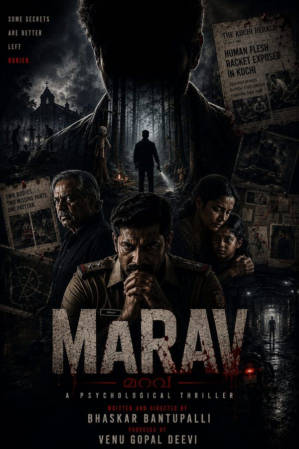
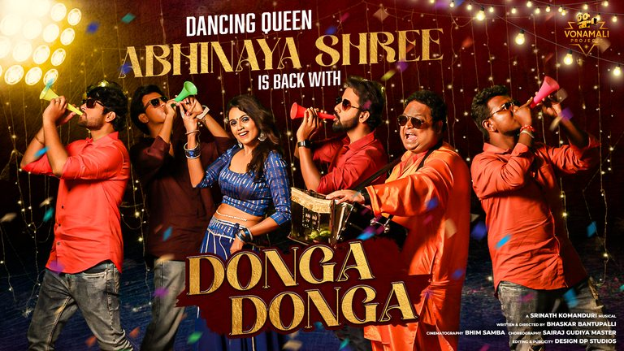

A horror mystery thriller written and directed by Bhaskar Bantupalli, releasing in Malayalam and Telugu. Vonamali Projects' recent feature, currently gearing up for its release.
Genre
Horror · Mystery · Thriller
Language
Malayalam, Telugu
Format
Feature film
Director
Bhaskar Bantupalli
Production
Vonamali Projects

Upcoming · Production No. 2
Marav
Vonamali Projects presents Marav, its second production venture — a gripping crime thriller built around mystery, investigation and suspense.
Genre
Crime thriller
Language
Malayalam, Telugu
Format
Feature film
Director
Bhaskar Bantupalli
Production
Vonamali Projects
Music
Vonamali Projects has been involved in producing and presenting engaging musical works, bringing together creative talent and entertaining stories through music.

Out now
Donga Donga
Dancing queen Abhinaya Shree is back with Donga Donga — a Srinath Komanduri musical, written and directed by Bhaskar Bantupalli.
More creative works and musical projects to be featured.
About
Vonamali Projects is a film and music production house. It backs feature films and original music, working with directors, composers and performers to bring entertaining stories to the screen.